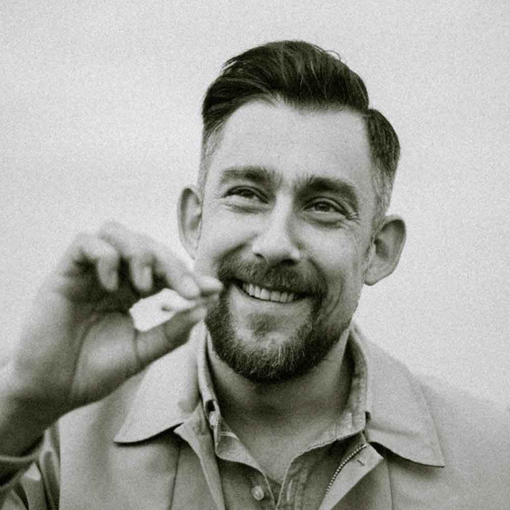

Sokół
Wojciech Sosnowski
Dyskografia

O artyście
Wojtek Sokół, naprawdę Wojciech Sosnowski, ur. w 1977 roku w Warszawie. Raper, przedsiębiorca, jedna z najważniejszych i najbardziej wpływowych osób w historii polskiego rapu, praprawnuk Stanisława Wyspiańskiego. Aktywny na scenie hiphopowej od połowy lat 90. Współzałożyciel kolektywu ZIP Skład, formacji WWO, projektu TPWC, a w ostatnich latach skoncentrowany na współpracy z wokalistką Marysią Starostą, będącą do 2016 roku również jego życiową partnerką. Właściciel i dyrektor artystyczny firmy Prosto, na którą składa się wytwórnia Prosto Label oraz firma ubraniowa Prosto Wear – w obu przypadkach są to wiodące marki na rynku, odpowiednio fonografii oraz odzieży dla młodych ludzi.